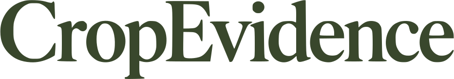
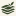

CROPEVIDENCE / EVIDENCE LAYERS
The selected identity,
ready to use.
Outlined vector logo, standalone symbol, wordmark and web icons, traced from your selected reference. Lettering requires no installed font.

Vector masters
| Asset | Olive | Reverse | |
|---|---|---|---|
| Full logo | SVG · PNG | SVG · PNG | PDF · EPS |
| Symbol | SVG · PNG | SVG · PNG | PDF · EPS |
| Wordmark | SVG · PNG | SVG · PNG | PDF · EPS |


Favicons at actual CSS sizes


The mark retains the original selected proportions. Favicon artwork uses a solid ivory background; the maskable variant has extra safe-area padding. All PNGs were rendered from the vector masters.
Original reference
View the selected board. The top large logo is the canonical source; small generated variations elsewhere on the board were not mixed into this set.